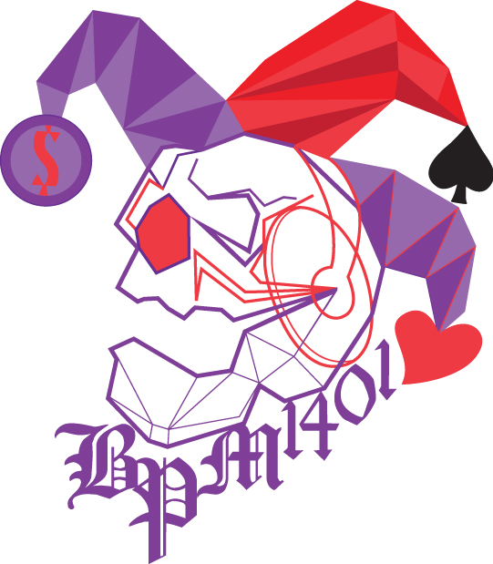

Podcasts
Live
The Pod Cut
Seven AI podcasts, each summarized in a word count it didn't choose. Technical rigor over hype, one verdict per host.

An Editorial System, Dealt in Cuts
Are You Ready To Play?
How fixed income discipline applies to every AI investment decision your company will make. Written from the Lehman trading floor in Tokyo, September 2008.
The other cuts
Seven AI podcasts, each summarized in a word count it didn't choose. Technical rigor over hype, one verdict per host.
Seven AI newsletters, cut from a KDnuggets shortlist and dealt their own deck. Signal over inbox noise.
Seven AI YouTube channels, from paper breakdowns to from-scratch builds. Its own deck, its own verdicts.
Another deck, dealt when there's a shortlist worth cutting down. Not forced — earned.